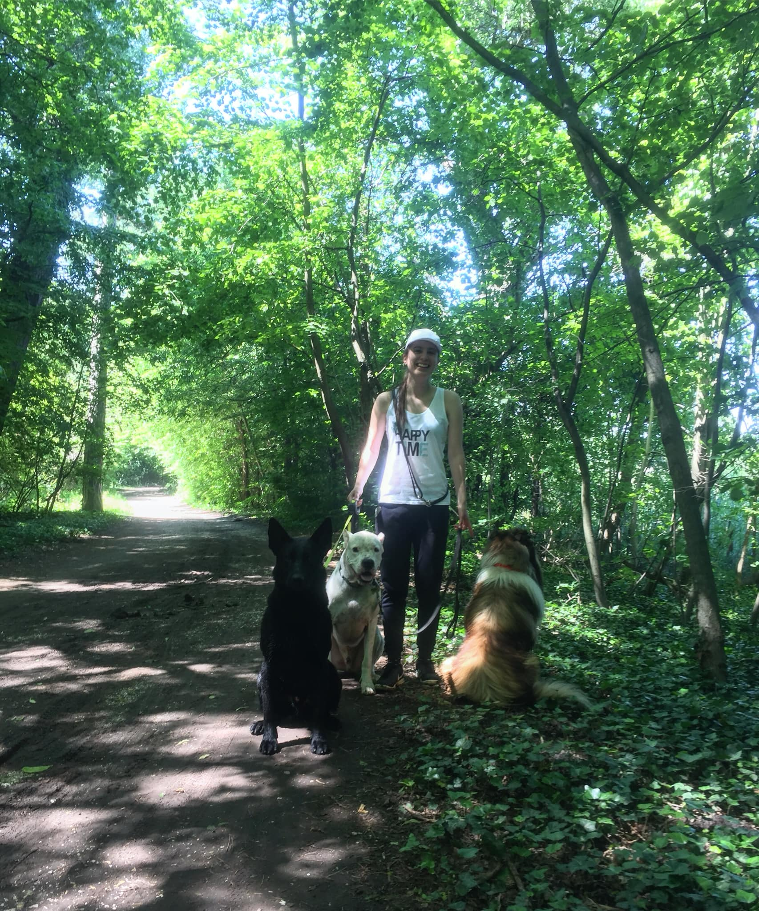
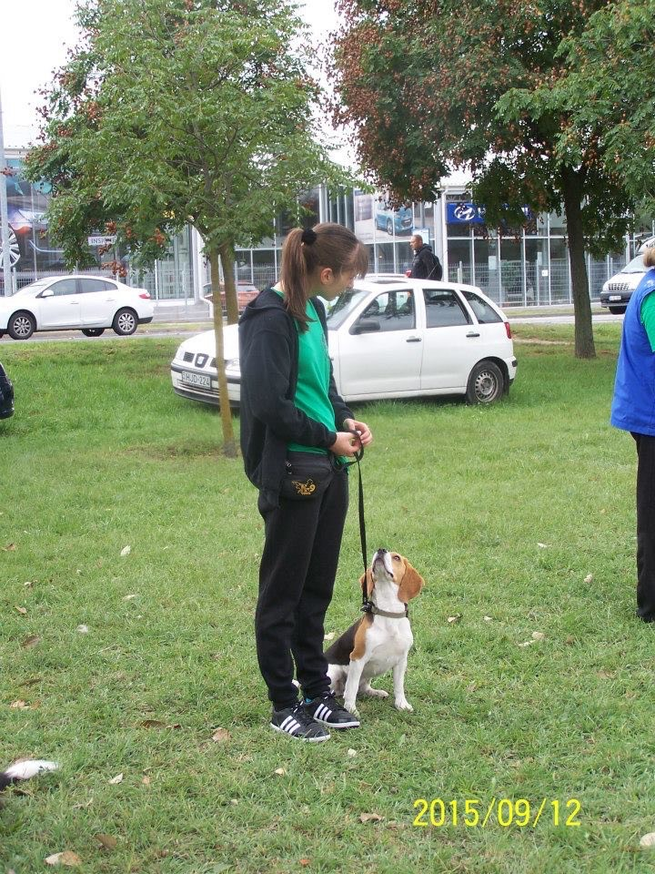
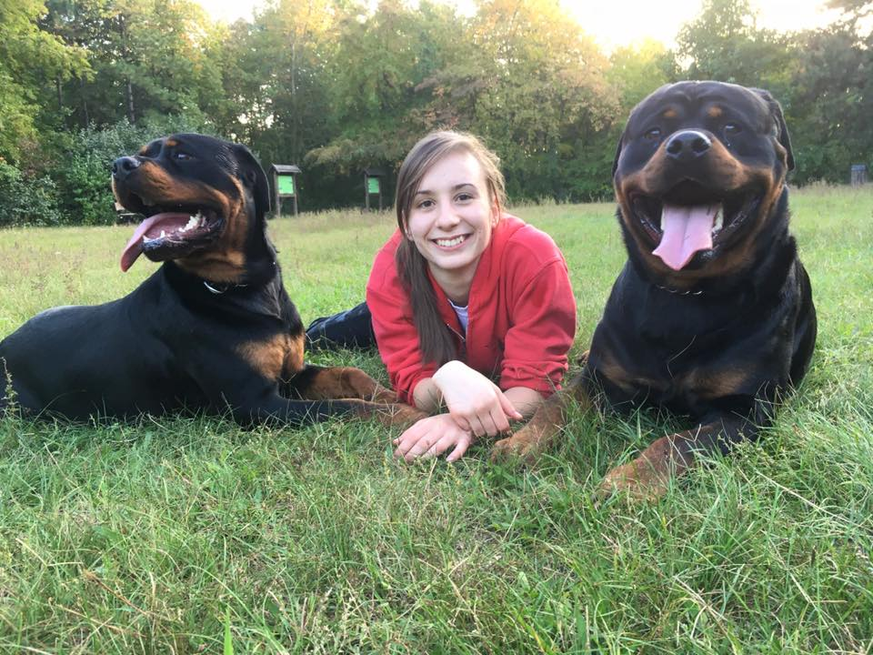
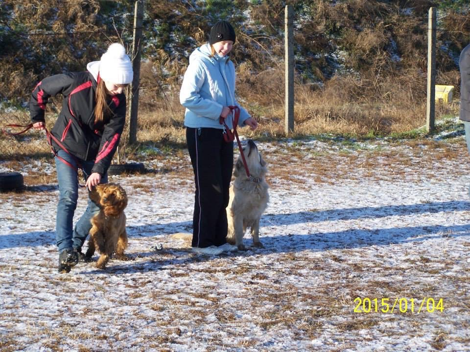
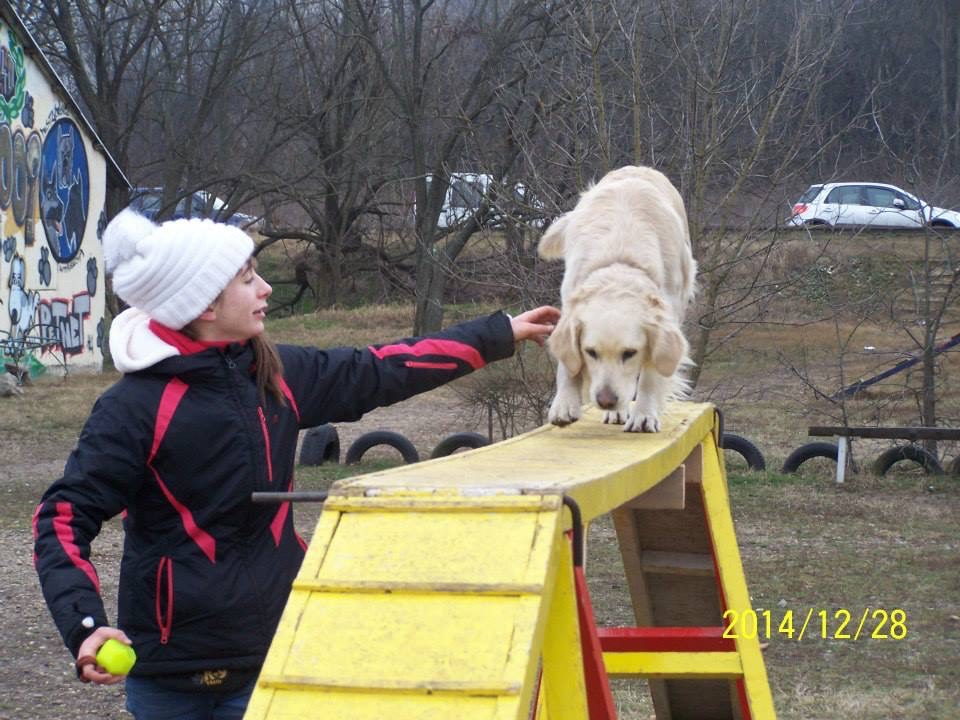
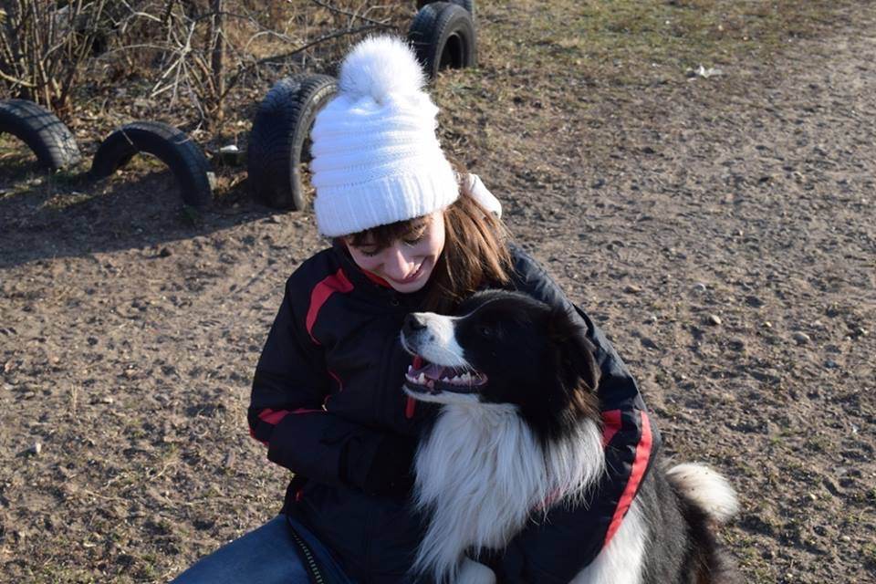
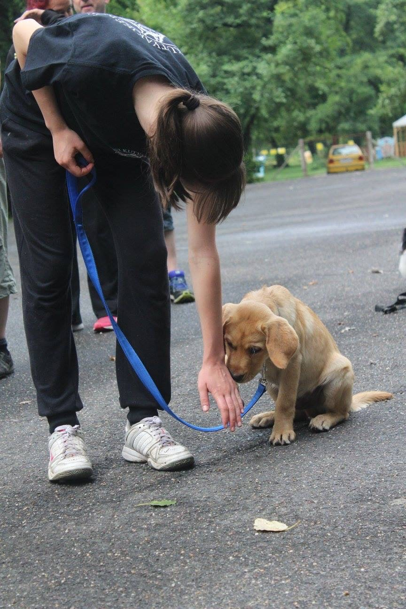
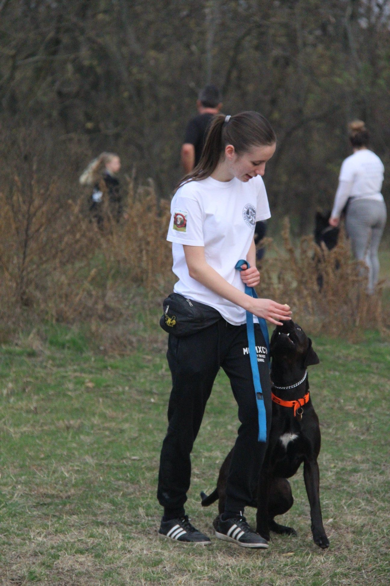

Két nehezen kezelhető, fajtájukból adódóan pörgős és agresszióra hajlamos kutyák. Rengeteg munkába telt, de mostanra lehet őket együtt sétáltatni, senkit nem bántanak indokolatlanul és a többi kutyával is hamar szocializálódnak. A séta elején még megvan a póráz húzás, de szépen korrigálható mindkettőnél.

Egy rettentően zabás, folyton éhes kis beagle lány. A legnagyobb problémája a gazdinak a kukázás illetve a földről való evés volt. Eleinte szájkosárral kellett sétáljunk a balesetek elkerülése végett, azonban mostanra olyan szintre fejlődött, hogy akár egy zacskó táp is lehet szétszórva, hozzá sem nyúl engedély nélkül.

Csintalan testvérpár, évekig jártam hozzájuk, mert szegény gazdi idős kora miatt nem tudta vinni őket sétálni és foglalkozni. A rottweilerek munkakutyák, ezért szükségük van rá, hogy ne csak testileg, de szellemileg is le legyenek fárasztva. 8 hónapos korukig egyáltalán nem voltak az utcán, a pórázt sem ismerték. 2 év intenzív foglalkozás után, már póráz nélkül tudunk sétálni az erdőben és első szóra visszajönnek ha hívom őket.

Egy autista labrador, akivel speciális módon kell foglalkozni, mert az agya teljesen másképpen működik, mint társaié. A gazdik csak egy olyan szintre szerettek volna eljutni, hogy az együttélés zökkenőmentes legyen. Ne harapja meg őket, el lehessen vinni sétálni és lehessen vele játszani. Mostanra a család kedvence lett, és amikor követik a tanácsaimat, még a kisgyerekükkel is össze lehet engedni a kutyát.

Behívhatatlan spániel kislány, akivel a séták rémálmokká váltak amint lekerült a póráz. Vadászösztöne vitte mindenfele ls sokszor a gazdi órákat várt rá egy egy susnyás részén az erdőnek. Én ezt az ösztönt kihasználtam, és egyedi módszerekkel tanítottam meg, hogy a sípjelre azonnal a gazdihoz kell futnia. Azóta vígan járják az erdőt-mezőt.

Sportos golden retriever lány, aki sosem fárad el. A kisgazdája agilityzni szeretett volna vele, de a kutyus nem ismerte az akadályokat. Hosszú hónapok alatt minden fajta akadállyal megismertettem és már tudnak együtt indulni amatőr versenyeken.

7 éves border collie, aki híresen intelligens fajta. Egy tanyáról mentette a gazdája, ahol egész nap a lánc végén csücsült. Hazahozván észrevették, hogy részleges halláskárosodása van, emiatt a vezényszavakat nem hallja rendesen. Ő volt az egyik legnehezebb eset, mert mellette én is rengeteget tanultam, hogy milyen fontosak a non-verbális jelek a kutyák számára, és neki is mindent meg lehetett tanítani, csak az ő nyelvén kellett kommunikáljunk.

Mostanra aktív vakvezető kutya lett, nála teljesen más irányelveket kellett kövessünk, mert a vakvezetők esetében, pont hogy az a cél hogy húzzon pórázon, hiszen a vak embert így tudja vezetni. Rengeteg ingerrel kellett megismerkednie, például vittem bevásárlóközpontba, metrózni, illetve a belvárosban is sokat sétáltunk, hogy ne okozzon ez neki gondot később.

Agresszív és hiperaktív kutya. Nagyon veszélyes kombináció egy hozzá nem értő számára. A gazdi már lemondott róla, hogy valaha is normális kutyája lehet, mint mindenki másnak a lakótelepen. Jelentem, kár lett volna feladni a reményt. A megoldás az volt, hogy lekötöttük a felgyülemlett energiáit és pozitív megerősítéssel káprázatos eredményeket érrtünk el nála.

Szepaarációs szorongás volt a fő gond amivel megkerestek a gazdik. Nem lehetett otthon hagyni a kutyát 5 percre sem, mert mindent tönkretett. Kennel tréninget javasoltam, amit véghez is vittünk, illetve a kutya gazda kapcsolatot kellett rendbetenni, mert amíg azt hiszi ő a falkavezér, a probléma nem fog megszűnni. Szerencsére ma már elmehetnek a gazdiék nyugodtan otthonról, a kutya a fekhelyén aludva várja őket haza.